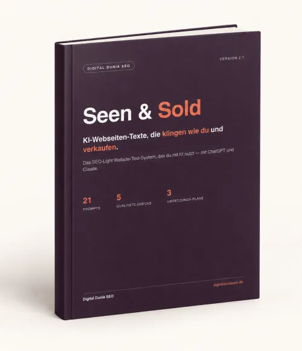

Seen and Sold: Das KI-Textsystem für bessere Websites
Produktprofil · Marktplatz-Daten 2026-10-13 · Verkaufsseiten-Recherche 2026-10-13 · Kategorien: Business & Investment, Computer & Internet, Marketing Services
- Seen and Sold: Das KI-Textsystem für bessere Websites ist ein/e E-Book in Business & Investment und Computer & Internet, vertrieben über den Digistore24-Marktplatz von Anbieter DigitalDuniaLLC, gelistet seit 2026-09-24.
- Listenpreis $88.33; Digistore24 meldet — Checkout-Konversion, — Stornierungsquote und 40 % Affiliate-Provision.
- Verdienst pro Verkauf (Affiliate): $35.33 (Anbieter-seitige Statistik, keine Prognose).
Interesse an Seen and Sold: Das KI-Textsystem für bessere Websites? Aktueller Preis, Boni und Garantiebedingungen finden Sie auf der offiziellen Seite des Anbieters:
Offizielle Verkaufsseite ansehen
Affiliate-Link (Werbung) — wir verdienen ggf. eine Provision, ohne Mehrkosten für Sie.

Marktplatz-Daten
| Produkttyp | E-Book |
|---|---|
| Preis | $88.33 (Single payment) |
| Affiliate-Provision | 40 % |
| Garantie/Rückgabe | Laut Verkaufsseite des Anbieters — vor dem Kauf auf der offiziellen Seite prüfen |
| Anbieter | DigitalDuniaLLC (gelistet seit 2026-09-24) |
| Marktplatz-Statistiken* | Checkout-Konversion — · Stornoquote — · Verdienst/Verkauf $35.33 |
* Anbieter-seitige Statistiken von Digistore24; sie hängen von der Traffic-Qualität ab und sind keine Prognose.
Marktplatz-Beschreibung des Anbieters
<blockquote> <h3 style="text-align:left;"><strong>Seen & Sold ist das SEO-Light-Textsystem für Selbstständige, Freelancer und kleine Unternehmen, die ihre Website mit ChatGPT oder Claude selbst erstellen oder </strong></h3> <h3 style="text-align:left;"><strong>überarbeiten möchten - ohne generische KI-Texte und ohne technisches KI-Know-how.</strong></h3> </blockquote> <p> </p> <hr /> <p><br />Entwickelt von einer <strong>professionellen SEO-Copywriterin</strong> mit über <strong>15 Jahren Erfahrung</strong> und mehr als <strong>200 realisierten Projekten.</strong></p> <p><br />Professionelles <strong>SEO-Copywriting-Wissen</strong>. Übersetzt in ein <strong>System</strong>, das du selbst mit ChatGPT oder Claude anwenden kannst.</p> <p>Seen & Sold ist aus der <strong>Praxis entstanden</strong>: Mein Wissen aus <strong>professionellem SEO-Copywriting, Content-Strategie, Suchintention, Conversion und Website-Texterstellung</strong> steckt in einem strukturierten System aus <strong>erprobten</strong> Prompts, Vorlagen, Checklisten und Workflows.</p> <p><br />Die Prompts sind nicht einfach aus einer KI-Ausgabe zusammenkopiert oder willkürlich zusammengesammelt. Sie wurden mit dem Ziel entwickelt, brauchbare, markengerechte und SEO-taugliche Website-Texte zu erstellen – und gleichzeitig typische KI-Floskeln und austauschbare Formulierungen zu vermeiden.</p> <p> </p> <hr /> <h2> </h2> <h2>Für wen ist Seen & Sold gemacht?</h2> <p> </p> <p>Für Selbstständige, Freelancer und kleine Unternehmen, die professionelle Website-Texte selbst erstellen möchten, statt ein <strong>komplettes Copywriting-Projekt auszulagern.</strong></p> <p>Seen & Sold ist besonders interessant für Menschen, die professionelle Copywriting-Strukturen nutzen möchten, ohne dafür <strong>mehrere hundert Euro oder mehr</strong> für die komplette Texterstellung ihrer Website auszugeben.</p> <p>Gleichzeitig richtet sich Seen & Sold bewusst an eine Zielgruppe, die KI nutzen möchte, <strong>ohne daraus ein Technikprojekt zu machen.</strong></p> <p> </p> <ul> <li>Du musst keinen eigenen KI-Agenten bauen.</li> <li>Du brauchst kein GitHub.</li> <li>Du musst keine API einrichten.</li> <li>Du musst keine komplexen Claude-Workflows programmieren.</li> <li>Du brauchst kein technisches KI-Wissen.</li> <li> </li> </ul> <p>Du brauchst lediglich ChatGPT oder Claude - und das System führt dich Schritt für Schritt durch den Prozess.</p> <p>Das ist <strong>kein technisches KI-System für Entwickler</strong>. Und es ist auch <strong>kein beliebiger Prompt-Baukasten</strong>.</p> <p>Es ist professionelles SEO-Copywriting-Wissen als einfach anwendbares DIY-System für deine Website.</p> <p> </p> <hr /> <h2> </h2> <h2>Was macht Seen & Sold anders?</h2> <p><br />Statt dir einfach eine Sammlung einzelner Prompts zu geben, bekommst du ein <strong>komplettes System</strong> für bessere Website-Texte:</p> <p><br />• einen persönlichen Master-Block für Unternehmen, Zielgruppe, Positionierung und Tonalität<br />• fertige Prompts für Startseite, Über-mich-Seite, Leistungsseiten, Kontaktseite und FAQ<br />• Prompts für Meta Titles und Meta Descriptions<br />• ein Keyword-Recherche- und Search-Intent-System<br />• SEO-Light-Strukturen für Website und Content<br />• Content- und Blog-Workflows<br />• Anti-KI-, Fakten-, SEO- und Conversion-Checks<br />• ein Publish-Gate zur Qualitätskontrolle<br />• einen konkreten 7-Tage-Umsetzungsplan<br />• zusätzliche Vorlagen, Checklisten und Workflows für die praktische Umsetzung</p> <p><br />Die Idee dahinter: KI soll nicht einfach irgendeinen Text schreiben. Sie bekommt den <strong>Kontext, die Strategie, die Struktur und die Regeln</strong>, die professionelle Website-Texte brauchen.</p> <p><br />So wird aus<strong> „Schreib mir eine Startseite und "schreibe wie ein Mensch"</strong> ein strukturierter Prozess, mit dem Selbstständige und kleine Unternehmen ihre Website-Texte deutlich gezielter selbst erstellen können.</p> <p> </p> <hr /> <h2><br />Warum Seen & Sold für Affiliates interessant ist</h2> <p> </p> <p>Seen & Sold verbindet mehrere Themen mit hoher Content-Relevanz: <strong>KI, ChatGPT, Claude, Website, SEO, Copywriting und Online-Sichtbarkeit.</strong></p> <p> </p> <h3>Die Zielgruppe ist klar definiert und über zahlreiche Content-Themen erreichbar:</h3> <p> </p> <p>Selbstständige, Freelancer, Coaches, Berater, lokale Dienstleister, Beauty- und Wellnessanbieter, Handwerksbetriebe und kleine Unternehmen, die ihre Website selbst erstellen oder überarbeiten möchten.</p> <p> </p> <h3><strong>Das Produkt bietet Affiliates zahlreiche natürliche Content-Einstiege, zum Beispiel:</strong></h3> <p> </p> <p>• Warum deine ChatGPT-Texte immer gleich klingen<br />• So schreibst du deine Website mit KI, ohne dass sie nach KI klingt<br />• 5 typische Fehler bei KI-Webseitentexten<br />• ChatGPT für deine Website nutzen – ohne SEO-Studium<br />• Website selbst schreiben oder Copywriting auslagern?<br />• So gibst du ChatGPT den richtigen Kontext für bessere Website-Texte<br />• Wie du KI-Texte persönlicher und markengerechter machst</p> <p> </p> <p>Damit liefert Seen & Sold nicht nur ein konkretes Produkt, sondern zahlreiche konkrete Content-Anlässe, über die Affiliates das Produkt authentisch empfehlen können.</p> <p> </p> <p><br />Affiliates erhalten einen direkten Promolink. Zusätzlich können fertige Werbemittel, Content-Ideen und weitere Materialien bereitgestellt werden, damit die Bewerbung mit möglichst wenig Vorbereitungsaufwand starten kann.</p> <p> </p> <p><span style="color:#ff6600;"><strong>Seen & Sold ist für Menschen, die professionelle Texte wollen, ohne selbst Copywriter zu sein – und KI nutzen wollen, ohne selbst zum KI-Techniker werden zu müssen.</strong></span></p>
Von der Verkaufsseite des Anbieters
Seitentitel: Seen and Sold: KI-Webseiten-Texte, die klingen wie du und verkaufen. - Digistore24
Abschnitts-Überschriften
- Seen & Sold: KI-Webseitentexte, die nach dir klingen und gefunden werden.
- Das bekommst du:
- FORMAT & LIEFERUNG:
- Seen & Sold: KI-Webseitentexte, die nach dir klingen und gefunden werden.
- Das bekommst du:
- FORMAT & LIEFERUNG:
- Seen & Sold: KI-Webseitentexte, die nach dir klingen und gefunden werden.
- Das bekommst du:
- FORMAT & LIEFERUNG:
Einstiegstext
Deine Website soll professionell wirken, nach dir klingen und die richtigen Menschen erreichen - auch wenn du deine Texte mit ChatGPT oder Claude erstellst.
Mit Seen & Sold bekommst du ein klares System , mit dem du deine Website-Texte selbst erstellst, überarbeitest und für SEO & KI-Suche optimierst - ohne stundenlang an Formulierungen zu sitzen und ohne typische KI-Floskeln.
Deine Website soll professionell wirken, nach dir klingen und die richtigen Menschen erreichen - auch wenn du deine Texte mit ChatGPT oder Claude erstellst.
Mit Seen & Sold bekommst du ein klares System , mit dem du deine Website-Texte selbst erstellst, überarbeitest und für SEO & KI-Suche optimierst - ohne stundenlang an Formulierungen zu sitzen und ohne typische KI-Floskeln.
Preisangaben auf der Seite: $10
Recherche-Methode: rohes HTML · 1018 Wörter · Qualität: rich · recherchiert am 2026-10-13. Vollständige Recherche-Datei (MD) ↗
Wie Produkte dieser Art geliefert werden
Allgemeiner Hinweis zu diesem Produkttyp (keine anbieterspezifische Anleitung): E-Books auf Digistore24 werden als digitaler Download geliefert (meist PDF/EPUB): direkt nach dem Checkout erhalten Sie einen Downloadlink oder Mitgliederzugang und können auf jedem Gerät lesen. Für die genaue Anwendung von Seen and Sold: Das KI-Textsystem für bessere Websites sind die offizielle Verkaufsseite und die enthaltenen Materialien maßgeblich.
Gut zu wissen
- Keine Garantie-Formulierung in unserer Recherche gefunden — bestätigen Sie das Rückgabefenster auf der offiziellen Seite, bevor Sie kaufen.
- Marktplatz-Zahlen (Preis, Provision, Konversion, Stornoquote) — Quelle: offizielle Digistore24-Marktplatz-API (Affiliate-Sicht), Stand 2026-10-13. Gegenprüfung: Marktplatz-Suche nach Produkt-ID 733708.
- Verkaufsseiten-Zitate — Quelle: https://www.digistore24.com/product/733708, abgerufen 2026-10-13 (Methode: rohes HTML). Verify: offizielle Seite öffnen.
- Garantie / Rückgabe — vom Anbieter festgelegt; vor dem Kauf auf der Verkaufsseite bestätigen.
- Nicht von uns geprüft: Produktqualität, Ergebnisse, Testimonials — kein Praxistest für dieses Listing durchgeführt.
Häufige Fragen zu Seen and Sold: Das KI-Textsystem für bessere Websites
Antworten aus dem Marktplatz-Snapshot (2026-10-13) und der Verkaufsseiten-Recherche (2026-10-13); Anbieteraussagen sind inline gekennzeichnet.
Was ist Seen and Sold: Das KI-Textsystem für bessere Websites?
Seen and Sold: Das KI-Textsystem für bessere Websites ist ein Angebot des Typs „E-Book" im Digistore24-Marktplatz, Anbieter: DigitalDuniaLLC, gelistet seit 2026-09-24. Eingepflegt unter Business & Investment und Computer & Internet. Digistore24 wickelt Checkout, Lieferung und Rückgaben ab.
Wie viel kostet Seen and Sold: Das KI-Textsystem für bessere Websites?
Der Digistore24-Marktplatz listet es für $88.33 (single payment). Preise legt der Anbieter fest und können sich ändern — der Marktplatz-Eintrag oben zeigt den Schnappschuss; die offizielle Verkaufsseite zeigt den aktuellen Preis.
Gibt es eine Geld-zurück-Garantie für Seen and Sold: Das KI-Textsystem für bessere Websites?
Unsere Verkaufsseiten-Recherche hat keine explizite Garantie-Formulierung gefunden. Viele Digistore24-Produkte bieten 60 Tage Geld-zurück, aber das legt jeder Anbieter selbst fest — bestätigen Sie es auf der offiziellen Verkaufsseite, bevor Sie kaufen.
Ist Seen and Sold: Das KI-Textsystem für bessere Websites seriös?
Wir bewerten keine Seriosität — wir veröffentlichen überprüfbare Zahlen: Anbieter DigitalDuniaLLC (gelistet seit 2026-09-24), Checkout-Konversion —, Stornoquote —, Affiliate-Verdienst/Verkauf $35.33 (alles Anbieter-seitige Marktplatz-Statistiken). Lesen Sie unsere 6-Punkte-Bewertungsmethode und entscheiden Sie anhand der Zahlen — oder diskutieren Sie Seen and Sold: Das KI-Textsystem für bessere Websites auf GitHub.
Wo kann ich Seen and Sold: Das KI-Textsystem für bessere Websites sicher kaufen?
Nur über die offizielle Verkaufsseite, die auf dieser Seite verlinkt ist (Checkout und Rückgaben laufen über Digistore24). Prüfen Sie dort Preis und Garantie vor der Bestellung. Der Link ist ein Affiliate-Link — der Kauf unterstützt diese Website ohne Mehrkosten für Sie.
Wie erhalte ich Seen and Sold: Das KI-Textsystem für bessere Websites nach der Zahlung?
Der Checkout läuft über Digistore24: Nach der Zahlung erhalten Sie Ihren Zugang oder Download per E-Mail und in Ihrem Digistore24-Kundenkonto. Lieferdetails für diesen Produkttyp: E-Books auf Digistore24 werden als digitaler Download geliefert (meist PDF/EPUB): direkt nach dem Checkout erhalten Sie einen Downloadlink oder Mitgliederzugang und können auf jedem Gerät lesen. Bei Problemen kann der Digistore24-Käufersupport Ihre Bestellung wiederherstellen.
Alle 50 Käuferfragen zu Business & Investment — das komplette Kategorie-FAQ.
Seen and Sold: Das KI-Textsystem für bessere Websites auf Reddit diskutieren
In Community-Threads vergleichen echte Käufer Erfahrungen. Wir verlinken Communities, keine einzelnen Posts — Threads verschwinden, Subreddits bleiben:
- r/Finanzen — deutschsprachige Community mit Diskussionen zu business & investment.
- Reddit-Suche nach „Seen and Sold: Das KI-Textsystem für bessere Websites" — Live-Ergebnisse, von uns nicht beeinflusst.
- Top-„Erfahrungs"-Treffer dieses Jahr — selbst nach Aktualität filtern.
Passendes auf Amazon.de
Physische Produkte und Zubehör, die häufig zusammen mit Seen and Sold: Das KI-Textsystem für bessere Websites gekauft werden:
- Software auf Amazon.de — Top-Ergebnisse, Amazon-Ranking.
- Bestseller: Software — live Liste von Amazon, von uns nicht kuratiert.
Werbung: Als Amazon-Partner verdient DigistorePicks DE an qualifizierten Käufen (Partner-tag adminstorede-21). Amazon setzt eigene Preise und Provisionen (niedrige einstellige Prozente — weit unter den 30–75% der Digistore24-Anbieter). Amazon ist ein Convenience-Angebot für Sachprodukte, kein Ersatz für das digitale Produkt oben.
Ähnliche Angebote in Business & Investment

<h1>SHOWUP</h1> <h3>3 Monate Strategie- und Umsetzungsbegleitung für dein Business.</h3> <p>Du steckst Zeit und Arbeit in deinen C

<p><span style="background-color:#ffff99;"><strong>Bewerbe die Nummer #1 Online <a style="background-color:#ffff99;">

<h1><strong>498,50 € Provision pro Verkauf – plus Folgeprovisionen</strong></h1> <p>Du schickst den Interessenten.</p> <p

<h2>Verdiene 50% Provision mit der #1 Masterclass für Online-Kurs-Business</h2> <p>Promote das <strong>kostenlose Online Training „Onlin
Seen and Sold: Das KI-Textsystem für bessere Websites ist auch gelistet in
Computer & Internet (307 Produkte) · Marketing-Dienstleistungen (297 Produkte)
Ähnliche Preislage in Business & Investment

<h2><strong>Mit Musik Geld verdienen, ohne musikalisch zu sein und vollkommen anonym!<br /></strong></h2> <p><span style=

<h3><strong>Lass andere deine Produkte für dich verkaufen und deine E-Mail-Liste aufbauen!</strong></h3> <p>Für alle Affiliates ei

<p><strong>Offer Radar AI™</strong> ist ein praktisches Analyse- und Kampagnen-Tool für Affiliate-Marketer, Creator, Reseller und Online-Busin

<h2>Adult Instagram Business Kurs </h2> <p>Mit dem <strong>Adult Instagram Business Kurs</strong> lernen Einsteiger Schritt für Sc
Ähnliche Suchanfragen
Wo Sie es sich ansehen können
Wo Sie es sich ansehen können
Aktuelle Preise, Garantie und Boni finden Sie auf der offiziellen Verkaufsseite:
Offizielle Verkaufsseite ansehen
Das ist ein Affiliate-Link (Werbung) — kaufen Sie darüber, verdienen wir ggf. eine Provision, ohne Mehrkosten für Sie.
Quellen & weiterführende Informationen
- Offizielle Verkaufsseite (aktueller Preis, Garantie, Boni): www.digistore24.com/product/733708 (Affiliate-Link)
- Öffentliche Digistore24-Produktseite: digistore24.com/product/733708
- Vollständige Recherche-Datei (Markdown, versioniert): content/products/59649-seen-and-sold-das-ki-textsystem-f-r-bessere-websites.md
- Marktplatz-Kategorie: Business & Investment
Wie wir Produkte wie Seen and Sold: Das KI-Textsystem für bessere Websites bewerten
Sechs Prüfungen, ausschließlich mit offiziellen Marktplatz-Zahlen. Die vollständige Bewertungsmethode lesen · unsere Recherche-Standards & Kennzeichnung.
Fragen oder eigene Erfahrungen mit Seen and Sold: Das KI-Textsystem für bessere Websites?
Praxis-Tests veröffentlichen wir erst, nachdem wir ein Produkt selbst gekauft haben — aber Ihre Erfahrung hilft anderen Lesern: Diskussion zu Seen and Sold: Das KI-Textsystem für bessere Websites auf GitHub starten/verfolgen. Falsche Zahl gefunden? Korrektur melden — jede Seite zeigt ihre Datenstände, Korrekturen gelten für die ganze Website.